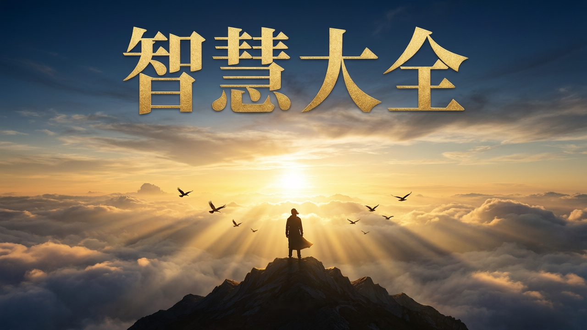
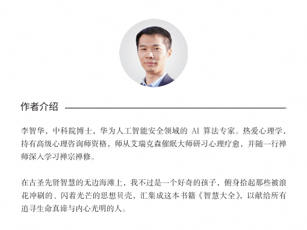
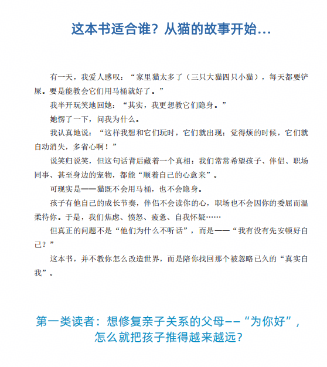
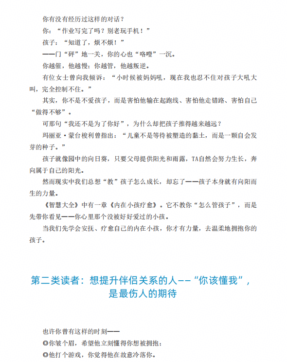
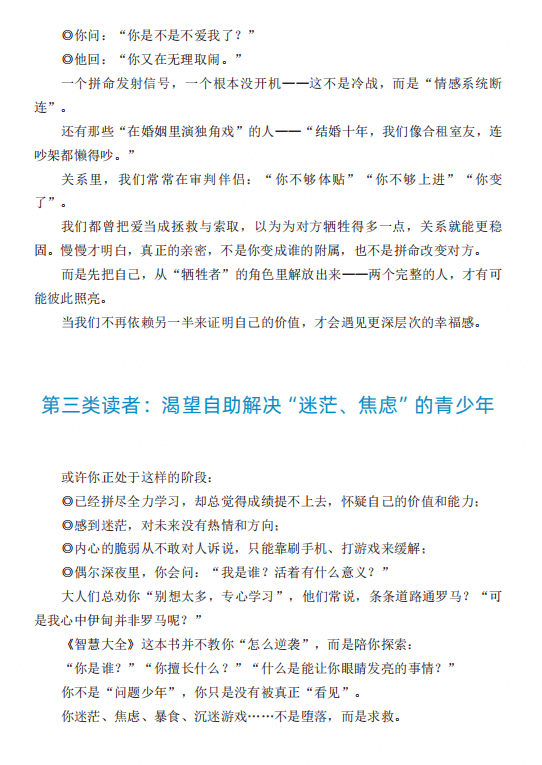
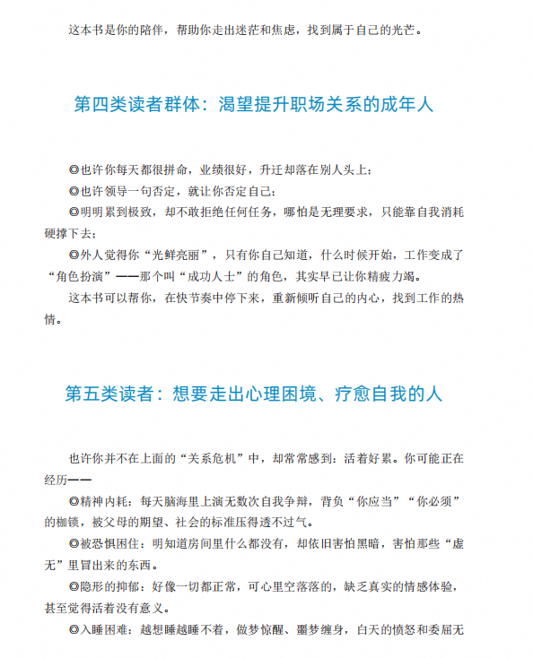
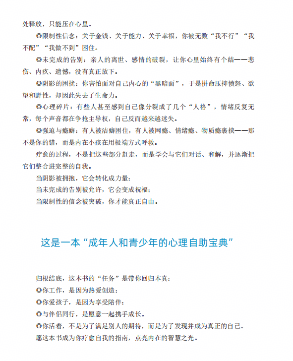

这本书讲了什么
在维多利亚时代英国的华丽庄园中，小温斯顿·丘吉尔本该是命运的宠儿——优渥的生活、贵族血统，一切都像是水晶般的童话。但现实远非如此。在他的自传中，丘吉尔坦诚地写道，尽管出身于声名显赫的贵族家庭，但他的情感世界却是一片荒芜。
他的父母与他关系疏远。父亲兰道夫勋爵总以失望的眼神审视这个"笨拙"的儿子，言语间满是贬低和苛责；母亲詹妮美丽而热衷社交，却很少给予情感的慰藉。丘吉尔曾形容她："她在我童年的眼中闪耀，就像一颗晚星。我深深地爱着她——但总是在远处。"
成年后的丘吉尔，作为英国首相领导英国对抗纳粹。政治对手阿斯特夫人抛出毒箭："如果我是你的夫人，我一定会在你的咖啡里下毒。"丘吉尔微微一笑："如果我是您的丈夫，我一定会把那杯咖啡一饮而尽。"这不仅化解了尴尬，更展现了他用幽默掩盖伤痕的独特方式。
丘吉尔的伟大，不在于他从未受伤，而在于他一直勇敢面对内心的"黑狗"（他对自己抑郁症的称呼）——他耗费半生，埋头书海，试图疗愈童年的创伤、超越自身的局限。1953年，他被授予诺贝尔文学奖。
我们每个人并非都能像丘吉尔那样，花毕生精力学习治愈童年伤痕、超越自我。对普通人来说，如何系统地疗愈内在的创伤、突破固有的枷锁、走向自我实现，往往变得更为艰难。
日常生活中，我们大多人更像尼采口中的"骆驼"，默默背负着"你应当"的重担——父母的期望、社会的规范、他人的价值观。童年的遗憾与成长的压力交织，让我们在焦虑、疲惫与自我怀疑中挣扎，难以找到真正的自我。
这种挣扎，往往在我们的亲密关系与家庭生活中显现得淋漓尽致。我们常常以"爱"的名义，期待伴侣因自己的痛苦而改变，或对孩子施加过度的控制。然而，这些期待与控制，非但不能拉近彼此的距离，反而让我们陷入无休止的内耗。
这些困境并非偶然。心理学家荣格曾深刻指出："潜意识指引着我们的人生，而你却称其为命运。"那些深藏于心底的情绪、信念和恐惧，如同无形的暗流，悄无声息地决定着我们生命的航船轨迹。
《智慧大全——从认识自我到超越自我》，正是你一直在寻找的那把钥匙，一面镜子，一盏灯。它不是终点，而是一段带你走向自我疗愈与超越之旅的邀请。
这本书以尼采的"骆驼-狮子-孩子"成长路径为线索，引领人从背负重担、压抑自我的"骆驼"，蜕变为敢于表达、拥有自主力量的"狮子"，最终回归纯真、开放与无限可能的"孩子"。
在这趟旅程中，你将：
- 遇见那个纯真的内在小孩，学会用无条件的爱和接纳去拥抱自己；
- 在迷茫中接纳不完美的自己，在觉知中找回内在的力量；
- 深入探索潜意识，倾听本心，实现真正的知行合一；
- 通过换框和回应术，打破固有的限制信念，最终回归自性的圆满与自由。
真正的智慧，不是堆砌的知识，也不是理性的炫技。它更像一面镜子，映照出我们内心的阴影；像一盏灯，指引我们穿越灵魂的幽暗，直至找到那份属于自己的宁静与力量。
愿你在这场向内的旅途中，觅得属于你的答案，最终成为那个我们本该成为的人——那个自由、纯粹、完整的自己，那个即使出走半生，归来仍是少年的人！
作者介绍

李智华，中科院博士，华为人工智能安全领域的AI算法专家。热爱心理学，持有高级心理咨询师资格，师从艾瑞克森催眠大师研习心理疗愈，并随一行禅师深入学习禅宗禅修。
读者对象




自序

试读
第一章：什么是智慧？
智慧是一个复杂而深邃的概念。在《智囊》一书中，智慧被定义为看透事物本质、具备长远目光并在逆境中展现解决问题的能力。他们靠的不是外在的技巧，而是内心的力量——一种沉静却坚韧的心力。
这种心力让人想起《道德经》里的话："知人者智，自知者明。"这或许是智慧的第一步——从外在的观察，转向内在的觉知。
尼采"精神三变"：骆驼（"你应当"的重担）→ 狮子（"我要"的觉醒）→ 孩子（"我是"的圆满）。本书以此为纲，带领读者从"骆驼"出发，走向"孩子"。
从留守儿童到技术专家：我的个人成长之路
从留守儿童到技术专家：我的个人成长之路
大家好，我是1986年出生在四川南充一个小山村的孩子。
今天我想讲的，不是逆袭爽文，而是一段真实的、普通人在困境中找到方向的成长记忆。
我印象中最深刻的画面，发生在我两三岁的时候。
那天，母亲去赶集，家里刚买回来几只小鸡仔——在那个年代，这是全家唯一的希望：等它们长大，下蛋可以换钱，卖了也能还点债。
可等她回来，鸡仔全被黄鼠狼叼走了。
她坐在屋里的小板凳上，抱着头，放声大哭。
那个画面，我至今记得。
回想起来，我才明白：原来贫穷，是一种会让人崩溃的力量。
我的父亲是个典型的“E人”——外向、在家待不住，总想出去闯荡。他自己说是出去"做生意"。说起“做生意”，但其实，他根本不是这块料。
比如2010年左右，他在温州代理一种快热式热水器，接到水龙头上，插电就能出热水的那种。
他一口气进货几百台，最后只卖出去几十台，其中好几台还是免费送给亲朋好友的。
你们知道吗？他帮别人免费安装完，还不好意思收钱。这样怎么可能赚钱呢？
童年里，我的父亲是缺失的。
农活几乎全靠母亲一个人扛。后来家里欠了一屁股债，父母不得不外出打工还钱，把我跟我弟弟寄养在外婆家——我们成了“留守儿童”。
最让我记忆犹新的，是他们离开那天。
我想跟着他们走，哭着求他们带上我。
结果，被我的大舅舅把我反锁在屋里。
那种“叫天天不应”的内心绝望和无力感，至今记忆犹新。
我唯一能做的，就是把屋里仅剩的一箩筐土豆推倒，来宣泄心中的不满。
被误解的孩子：为什么大人宁愿相信谎言？
成为留守儿童后，我和弟弟过得很没有安全感。
外婆没读过书，对我们的学习并不上心。更要命的是，从家到学校要翻山越岭，走一个多小时的山路。
每天的情况是这样的：我们放学回家，外婆才开始做饭，吃完饭再去学校，几乎必然迟到。连续好几次迟到了，就要被班主任打。
我哭着向老师解释说是外婆做饭太晚了，后来老师找外婆对质。结果外婆说没有的事，我们是路上贪玩才迟到的。
一个大人，为了面子，可以如此轻易地否定一个孩子的真实。
为什么大人们宁愿相信成年人的谎言，也不愿相信孩子含泪说出的事实呢？
当然，那天，我和弟弟又挨了打。
暴力下的“懂事”：我不是乖，只是怕
一年后，父母终于回来了，债务也还清了。
但好景不长，经济压力让他们总有一个人要外出打工维持生计。
更糟的是，父亲在家的时候，他迷上了赌博。这成了我们童年最大的噩梦。
他一旦输了钱，心情就会变得极其暴躁。我们稍微有什么做得不对的地方——尤其是作业做错了，或者没有按时做作业——就会遭到他的毒打。
我记得有一次，他把我们打得特别惨，连他自己都觉得过分了，事后红着眼睛对我们说："以后再也不打你们了，爸爸保证。"
那一刻，我们真的相信了。但这只是空话。
后来我们还是经常挨打，我弟弟挨得最多，我不是更乖，只是更“懂事”——我知道，只要我不反抗、不顶嘴、不犯错，就能少挨一顿打。
与其说是听话，不如说是在恐惧中学会了委曲求全。
我也很感谢我弟弟。
如果不是他一次次替我挡下父亲的“怒火”，也许我才是那个伤痕最多的人。
初中：在灰暗中，我遇见了光
到初中时，父母全部外出打工，留下我和弟弟相依为命。
每个周末，我们都要从5-6公里外的学校回家，自己做饭、洗衣服。最难忘的是，家里经常连菜都没有，连咸菜都没有。每次基本就是吃白米饭。
为了节省时间，我们都是提前一晚把米饭做好，第二天早上热一下就去上学。有一次，我热好饭揭开锅盖，看到里面有一只大拇指长的蟑螂——南方的蟑螂真的很肥！它竟然潜伏在米饭里偷吃！
8. OH 卡应用："我为什么不喜欢钱？"
8.OH 卡应用：“我为什么不喜欢钱？”
在我们的生活中，财富常被视为成功的象征，但对某些人而言，它却可能承载着复杂的情感与记忆，甚至在潜意识中留下难以愈合的伤痕。OH卡作为一种直观而深刻的心理工具，能够帮助我们触及那些被遗忘、压抑或不愿面对的真实感受，尤其是那些与金钱、爱与生存紧密交织的早期生命印记，从而开启自我觉察与疗愈的可能。
一个案例：我为什么不喜欢钱？
来访者胡宇飞，32岁，是一名普通的上班族。他带着一个看似简单却意味深长的困惑前来咨询："我好像没那么想要钱，甚至有点不喜欢钱。"
不同于大多数人对财富的渴望，胡宇飞对赚钱缺乏强烈动机，甚至内心还隐隐带着抗拒情绪。每当话题涉及财富，他总会感到一种难以名状的沉重感。
这种复杂的情感让胡宇飞困惑不已。他希望找到这种特殊情绪背后的根源，揭开埋藏在内心深处的真相。
OH卡的探索过程
胡宇飞在咨询中运用OH卡，以"财富"为核心主题，深入探索自己对金钱的复杂情感和内在信念。整个探索过程分为以下几个步骤：
（1）设定意图
在正式开始前，胡宇飞明确了自己想要解答的核心问题："为什么我对金钱缺乏强烈的渴望？这种态度背后究竟隐藏着什么？"
（2）选择关键词卡
经过深思熟虑，他挑选了两张具有对比意义的关键词卡：
◎"冰冷"：精准捕捉了他当前对财富的真实感受——疏离、抗拒，甚至带有某种防御性的冷漠。
◎"温暖"：象征着他内心深处渴望达到的理想状态——与财富建立健康、自然的关系。
（3）抽取情境卡并解读
“冰冷”对应：一张画着一个人在接受“审问”的图片。
“温暖”对应：一张画着一个人在田野上播种的图片。
（4）深入联想与自述
胡宇飞凝视着卡片，尘封已久的记忆之门被缓缓推开。一个深埋心底、关于金钱与爱的创伤故事逐渐展开：
“我13岁那年，父亲突发心脏病去世了。没过多久，我妈就改嫁了。爷爷奶奶和我妈本来就有矛盾，现在整个家庭的冲突彻底升级了。
那段时间，整个家感觉特别特别阴冷，每个人脸上都像挂着霜，一点笑容都没有。村里的闲言碎语、亲戚间的争吵，像潮水一样淹没了我。
9. OH 卡应用：从焦虑孩子到看见自我
9.OH 卡应用：从焦虑孩子到看见自我
在快节奏的生活里，我们常常把目光投向外界——孩子的成绩、伴侣的态度、工作的压力、社会的竞争。我们试图去改变他人、掌控环境、规划未来，仿佛只要外部一切如愿，内心就能安宁。然而，当焦虑、担忧、无力感不断浮现时，我们是否曾停下来问一句：这些情绪的源头，真的是外界的问题吗？
OH卡，就像一面通往潜意识的镜子——它不评判，也不指导，只是静静地映照出我们内心最真实的声音。它温柔地邀请我们，从对外界的执着“掌控”中抽离，转向内在的觉察与倾听。在那些看似模糊、甚至混乱的图像中，我们反而可能看见那些长久以来被忽略、压抑或误解的自我需求。
一个案例：年薪百万的父亲，为何深夜难眠？
来访者林先生，是一位即将退休的华为技术专家。他拥有令人羡慕的职业履历——深耕技术十几年，年薪百万。然而，近来他频频失眠，焦虑围绕在一个核心主题上：即将上小学的儿子。
在和我咨询的过程中，他反复提到：“现在社会太卷了，竞争太激烈……我最怕的是，孩子将来在社会上没有立足之地。”表面看，这是典型的“育儿焦虑”——对教育竞争的恐惧、对孩子未来的担忧。
关于本书
| 书名 | 智慧大全 —— 从认识自我到超越自我 |
| 作者 | 李智华 |
| 出版社 | 线装书局 |
| 出版年 | 2025-5-30 |
| ISBN | 9787780044745 |
| 页数 | 415 |
| 定价 | ¥168 |